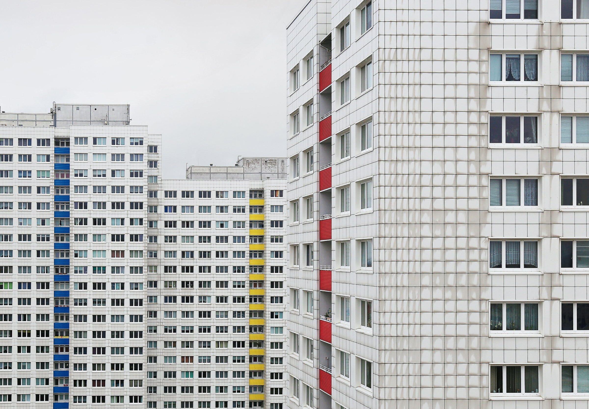
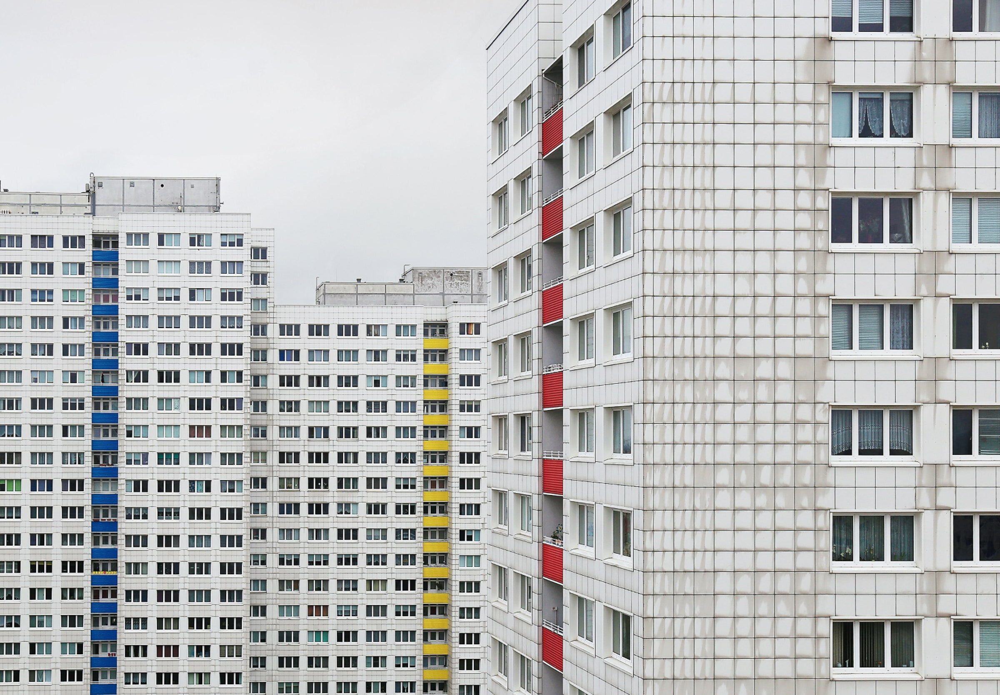

In order for us to deal with poverty or to eliminate it we must address and prioritize the people who live in poverty first.
These solutions come in the form of public education for all, offering goob jobs for impoverished civilians to take that will
either have a good wage or a low wage but has shelter in the form of communal apartments or spaces and with meals provided.
But in order for these to happen a government must be willing
to dedicate as many resources as possible to solve poverty. Because it is ineffective of a government to rely donations
from donators as this will only help a very small portion of the impoverished
 
